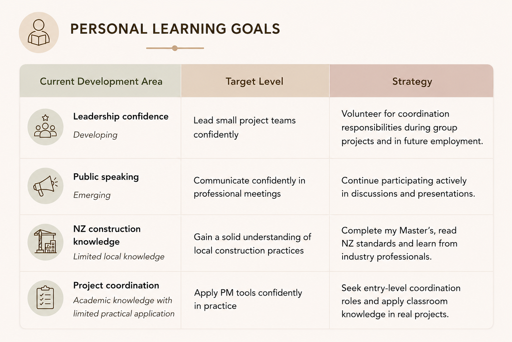
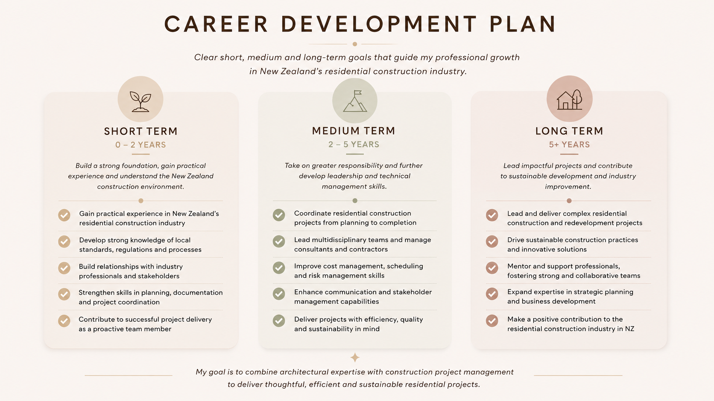
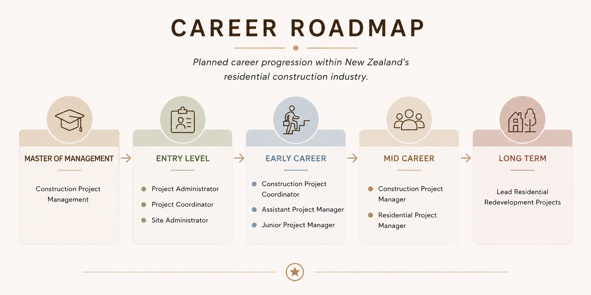
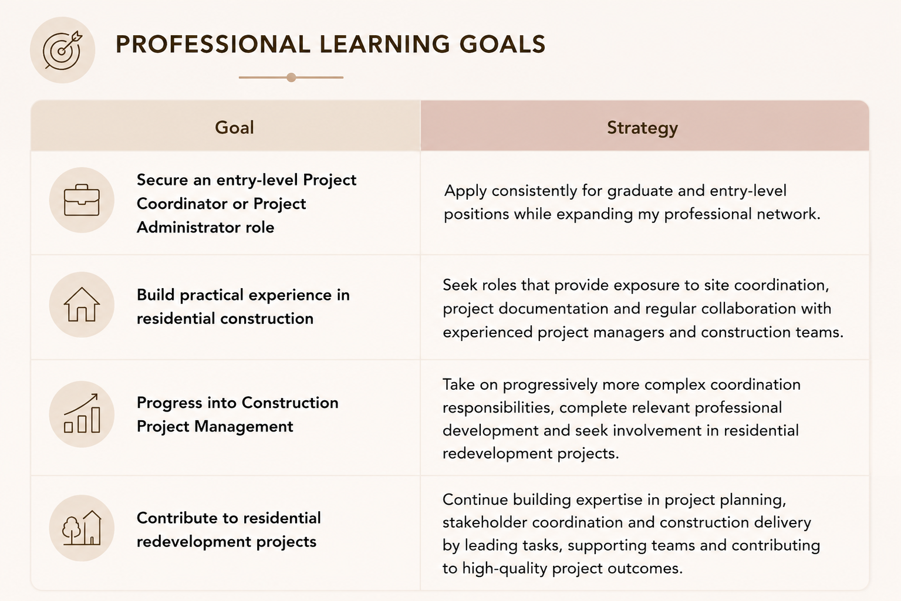

Personal Learning Goals

Personal learning goals, target competencies and development strategies.

Building the next chapter
A focused pathway toward project leadership in New Zealand's residential construction industry.
New Zealand's residential construction sector offers career pathways for professionals developing project coordination, construction management and local industry knowledge. My goal is to progress from an entry-level project coordination role into construction project management, gradually taking on greater responsibility as I gain local knowledge and practical experience. In the long term, I intend to lead residential construction and redevelopment projects.
Clear short-, medium- and long-term goals guide my professional growth.

Planned progression from postgraduate study and entry-level coordination to project leadership.

Targeted personal development and practical professional strategies support each stage of the roadmap.

Personal learning goals, target competencies and development strategies.

Professional learning goals and strategies supporting career progression.